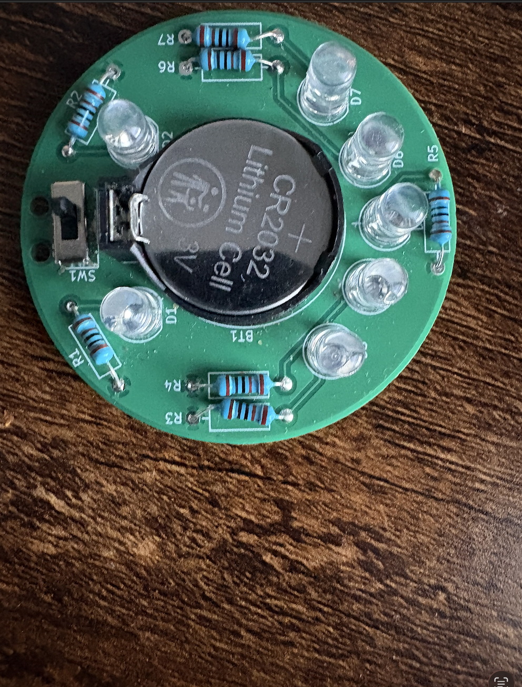

Artifact 1

Description: This assignment was called Smiley, which we had to solder pins using soldering irons. We had to demonstrate very careful procedures so we ensured safety for others in the classroom. The reason it's called Smiley is because when it turns on it lights up in the shape of a smile.
Reflection: This project helped me learn how important patience and safety are when working with electronics. I had to solder carefully so the pins connected properly without damaging the board or creating unsafe mistakes. Seeing the LEDs light up in a smile shape showed me that small details in hardware can make a project work successfully.